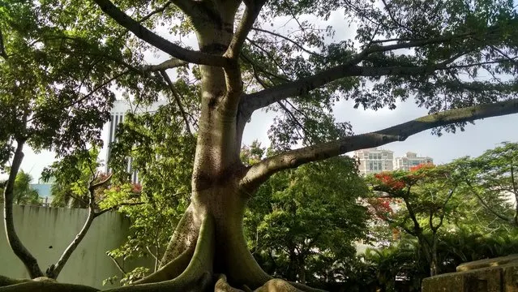
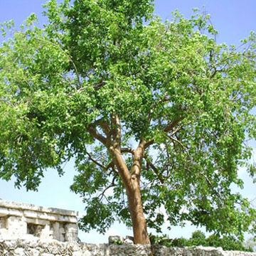
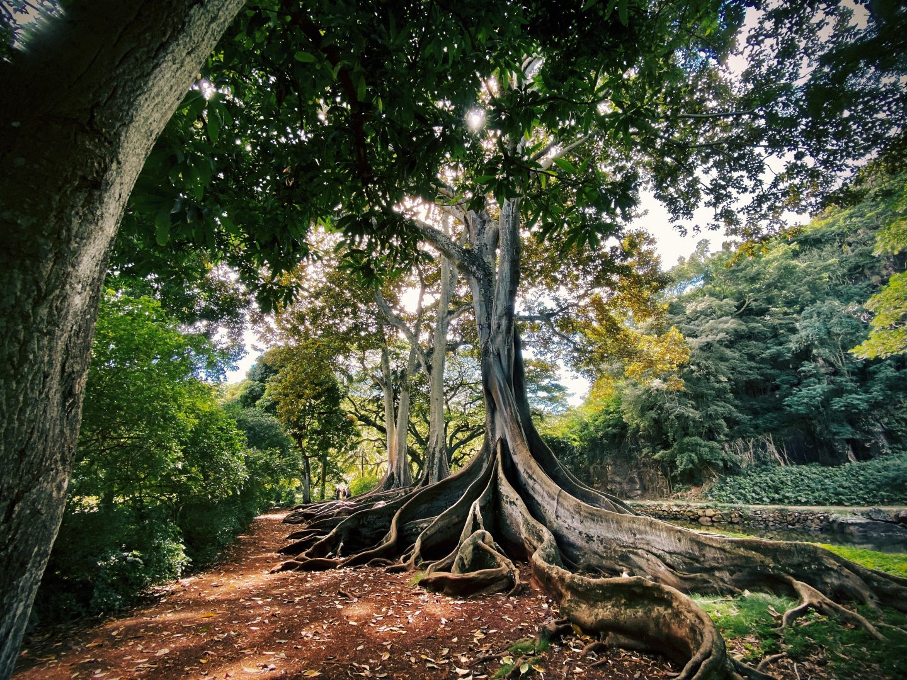
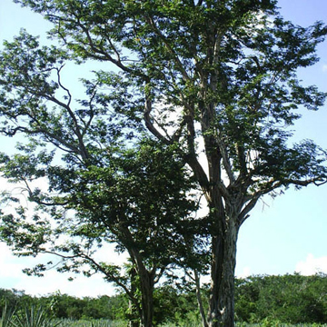

|
Las plantas del estado de Yucatan |
Ceiba |
Árbol gigantesco de los más grandes en la América tropical, caducifolio, de 20 a 40 m. (hasta de 70 m.) de altura ( en Yucatán alcanza hasta los 20 m. de altura).
copa redondeada o plana muy amplia, hojas palmado compuestas. tronco cilíndrico sólido, grueso y recto, con contrafuertes grandes, florea de diciembre a marzo.
Los frutos son cápsulas oblongas o elípticas que contienen muchas semillas globosas de 4 a 8 mm. rodeadas por abundante vello sedoso blanco a gris plateado.

|
Chaka |
El palo mulato, también conocido como chacaj,carate, indio desnudo, jiote, jiñocuabo, chaká, encuero o almácigo, es un árbol de la familia Burseraceae, nativo de regiones
tropicales de América desde el sudeste de Estados Unidos, México...Etc. Árbol de hasta 15 mts. de altura, con el tronco recto, escamoso y muy ramificado en la copa;
las flores son pequeñas de color crema-verdoso muy aromática, florea de febrero a mayo; los frutos son cápsulas drupáceas de 1 a 1.5 cm., es una especie caducifolia.

|
Yaxché |
El Yaxché es el nombre que los mayas le dan a la Ceiba, un árbol sagrado para ellos, y se considera el "árbol de la vida" o el "eje del universo".
Es un árbol gigante, capaz de alcanzar grandes alturas, y se le atribuye un significado espiritual profundo en la cultura maya.

|
Kitanché |
Árbol que crece hasta 20 m. de altura, subcaducifolio, copa irregular, corteza escamosa, madera de color crema-amarillenta, hojas compuestas imparipinnadas,
flores amarillas vistosas perfumadas en racimos, florea de marzo a abril, los frutos son vainas aplanadas de color pardo-amarillento-brillante con varias semillas
amarillo verdosas.

|